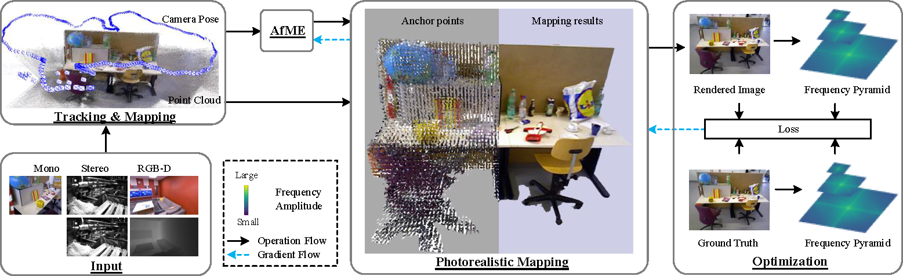
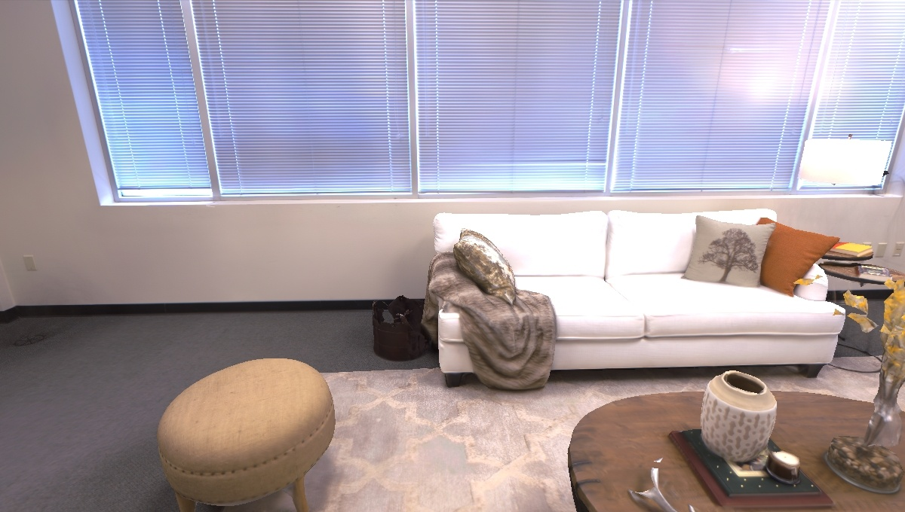
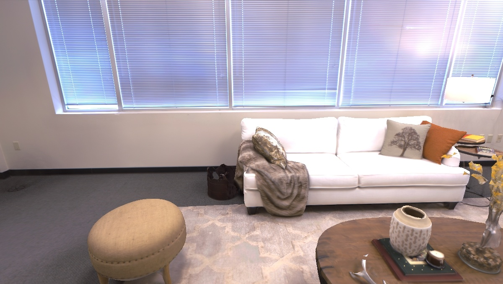

Abstract
3D Gaussian splatting (3D-GS) has recently revolutionized novel view synthesis in the simultaneous localization and mapping (SLAM) problem. However, most existing algorithms fail to fully capture the underlying structure, resulting in structural inconsistency. Additionally, they struggle with abrupt appearance variations, leading to inconsistent visual quality. To address these problems, we propose SEGS-SLAM, a structure-enhanced 3D Gaussian Splatting SLAM, which achieves high-quality photorealistic mapping. Our main contributions are two-fold. First, we propose a structure-enhanced photorealistic mapping (SEPM) framework that, for the first time, leverages highly structured point cloud to initialize structured 3D Gaussians, leading to significant improvements in rendering quality. Second, we propose Appearance-from-Motion embedding (AfME), enabling 3D Gaussians to better model image appearance variations across different camera poses. Extensive experiments on monocular, stereo, and RGB-D datasets demonstrate that SEGS-SLAM significantly outperforms state-of-the-art (SOTA) methods in photorealistic mapping quality, e.g., an improvement of 19.86% in PSNR over MonoGS on the TUM RGB-D dataset for monocular cameras.
Method OverView
The input image stream is processed by the localization and geometric mapping modules, generating point cloud and accurate poses. Structure-Enhanced Photorealistic Mapping (SEPM) incrementally initializes anchor points (middle) based on the point cloud (top left), which preserves the underlying structure. The poses are then fed into the Appearance-from-Motion embedding (AfME) to model appearance variations in the scene. Additionally, we introduce frequency pyramid regularization (FPR) to improve the reconstruction of high-frequency details in the scene.
Video
Visualization of AfME controlling appearance
Results
Here, we present the comparisons of our method against the current state-of-the-art methods, including Photo-SLAM (CVPR 2024), MonoGS (CVPR 2024), SplaTAM (CVPR 2024), RTG-SLAM (SIGGRAPH 2024), and GS-ICP SLAM (ECCV 2024). Our SEGS-SLAM achieves superior photorealistic mapping quality across monocular, stereo, and RGB-D cameras.
RGB-D Camera
SEGS-SLAM can accurately recover the contours of edge regions, validating the effectiveness of our FPR. Our SEGS-SLAM better reconstructs scene structure and lighting variations, benefiting from our structured 3D Gaussians and the AfME.
We show more comparisons with additional methods on individual sequences from the Replica and TUM RGB-D datasets.
 

Monocular Camera
Compared with RGB-D scenarios, SEGS-SLAM's rendering quality does not decrease substantially, whereas Mono-GS experiences a sharp decline. On the Replica dataset, our SEGS-SLAM effectively models high-frequency details more realistically in regions such as the edge of the wall.
We show more comparisons with additional methods on individual sequences from the Replica and TUM RGB-D datasets.


Stereo Camera
Our SEGS-SLAM remains effective in stereo scenarios, which demonstrates the broader applicability of our system. As shown in the following figures, SEGS-SLAM better reconstructs the global structure and local details of the scene.
We show more comparisons with additional methods on individual sequences from the EuRoC MAV dataset.